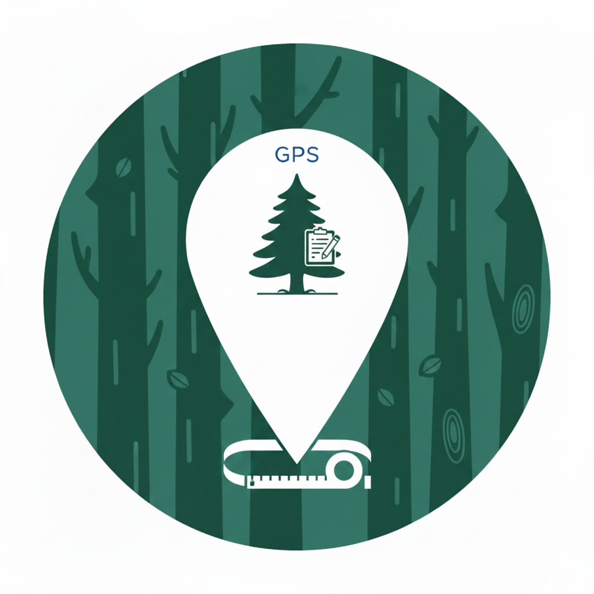
スマホで読取
現場の課題を”生成AI”×”Web技術”で解決！
本サイトでは、スマート林業の推進を目指し、現場で手軽に使えるWebアプリを公開しています。手元のスマホやタブレットで林業DXを体験してください。
| 森林調査系 | 立木調査、 樹高測定、 AI林冠（＆撮影場所サイト）、 AI魚眼（＆撮影場所サイト）、 AR釣竿、 立木評価（＆丸太価格サイト） |
|---|---|
| GPS地図系 | 座標変換、 簡易ナビ、 路網踏査、 林小班図（＆地図切出サイト、地図切出スクリプト） |
| 現場作業系 | 丸太検知、 AI検知、 作業日報、 AI日報（＆解析サイト）、 電子黒板（＆撮影場所サイト） |
| DIY木工系 | 板の木取、 AI木工 |
| Q＆A系 | 伐採届出 |
| アプリ連携系 | Excel連携ツール |
電波の届かない山奥でも動作し、現場でのデータ収集を効率化します。
各アプリは以下の手順で画面へ追加し起動してください。なお追加されるまで時間がかかる場合があります。
・Android端末；各リンクを「chrome」で開く→「ホーム画面に追加」→「インストール」→ホーム画面のショートカット（アイコン画像）から起動
・ios端末；各リンクを「Safari」で開く→「共有」→「ホーム画面に追加」→ホーム画面のショートカット（アイコン画像）から起動

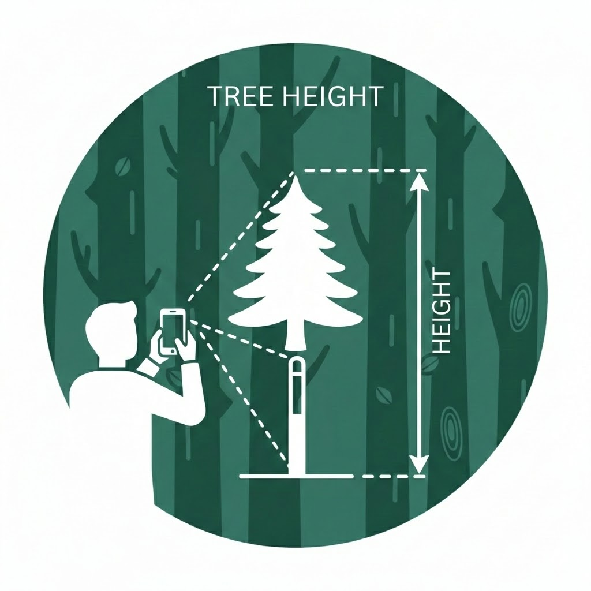
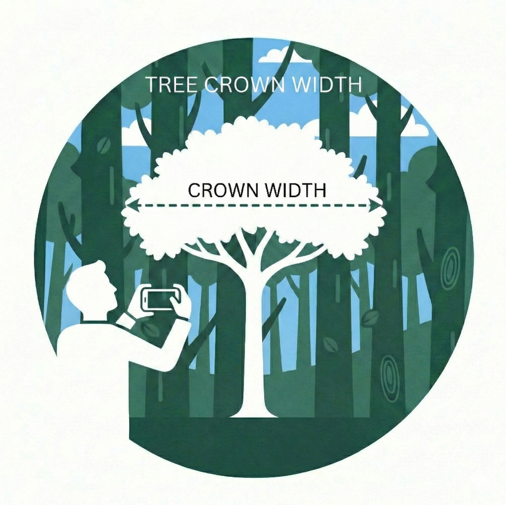
スマホで下から撮った林冠の写真から間伐計画を判断します。
使用する機能：カメラ、ジャイロ
コツ！：水平を保つため’水準器’小円に目印を入れてください。
参考！：撮影場所を撮影場所サイトで地図上で確認できます。
アプリを開く 使い方（note）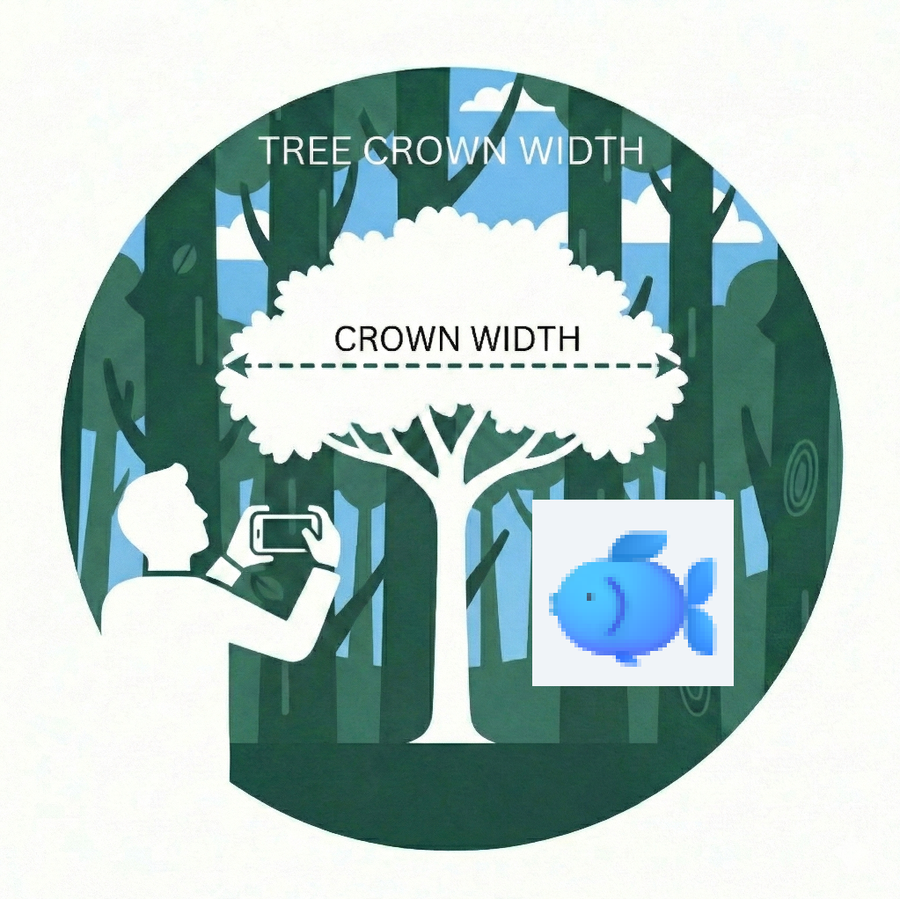
スマホに付けた魚眼レンズで上空を撮って植林地の光環境を測定します。
使用する機能：カメラ、ジャイロ
準備！：スマホに付ける魚眼レンズ（視野角180度）が必要です。
コツ！：水平を保つため’水準器’小円に目印を入れてください。
参考！：撮影場所を撮影場所サイトで地図上で確認できます。
アプリを開く 使い方（note）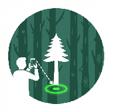
釣竿の替わりにスマホでプロット内の本数を調査します。
使用する機能：カメラ、電子コンパス、ジャイロ
コツ！：端末を’目の前’で固定して上・下へ向けてください。
アプリを開く 使い方（note） スマホで読取
スマホで読取
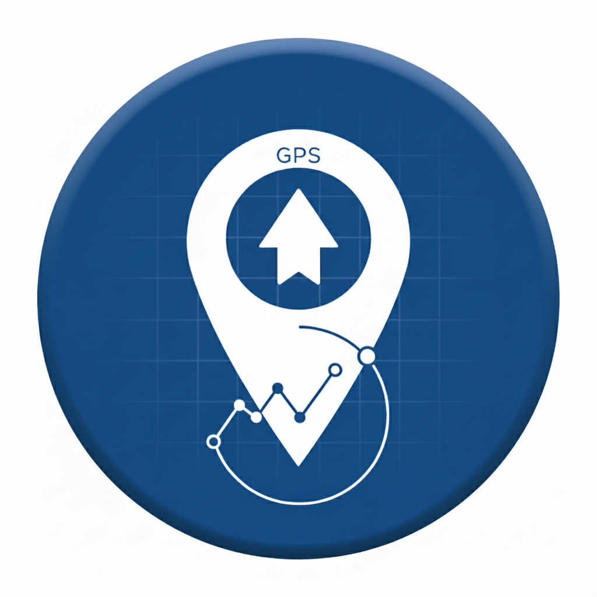
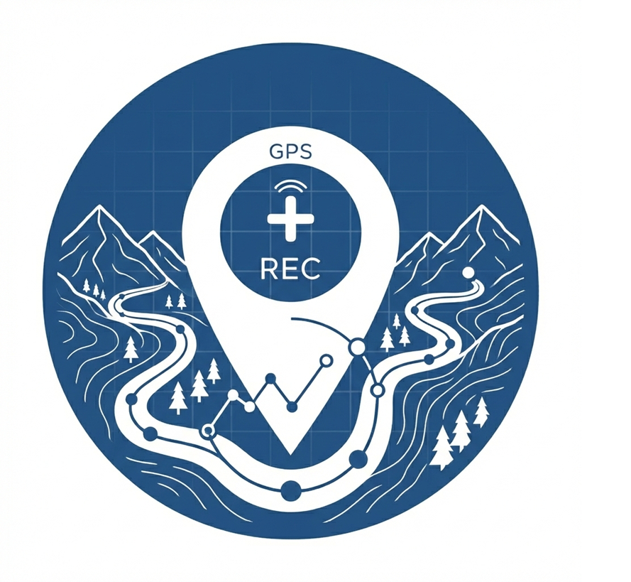
スマホでGPSログを取りラインデータで出力しGISに重ねます。
使用する機能：GPS
注意！：GPSログを取るため自動ロックを外し常にアプリを画面表示してください。使用前にバッテリーを十分に充電してください。
アプリを開く 使い方（note）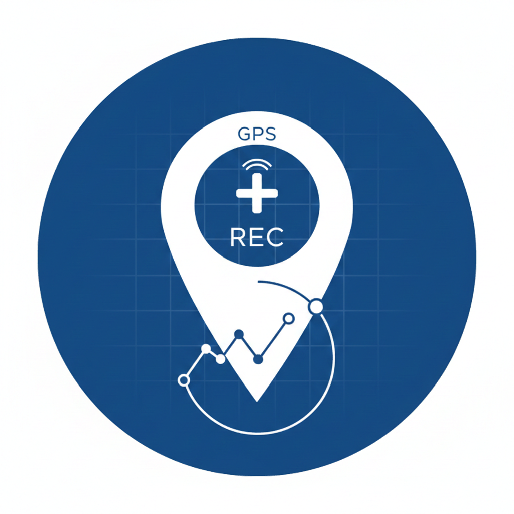
手持ちの森林計画図、地理院地図等をスマホに載せて現地確認します。
使用する機能：GPS
準備！：スマホに載せる図面をJPGで出力し”左下・右上”の緯度経度（度表記）をファイル名に付し端末に保存してください。
例）test_36.060717_136.279386_36.066139_136.288754.jpg
参考！：衛星画像などを地図切出サイトでJPGとして切り出せます。
参考！：QGISで表示した地図を地図切出スクリプト (py)でJPGとして切り出せます。
アプリを開く 使い方（note）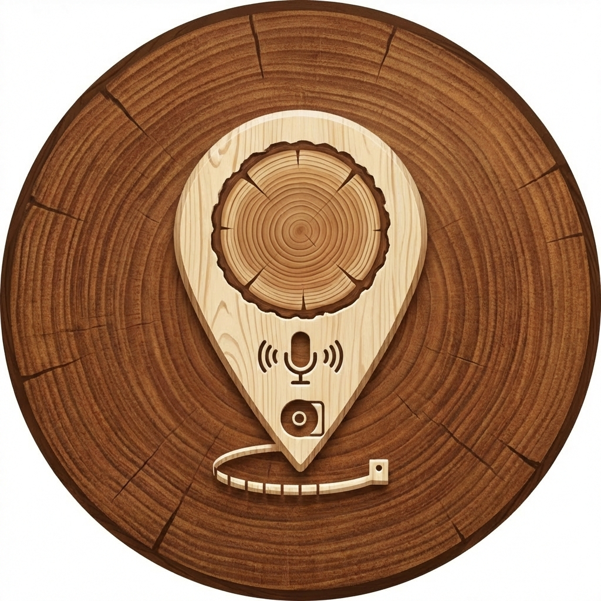
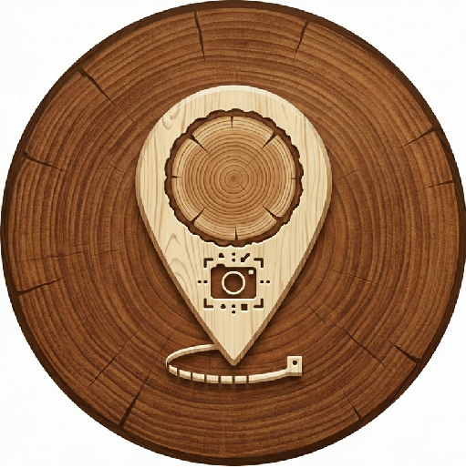
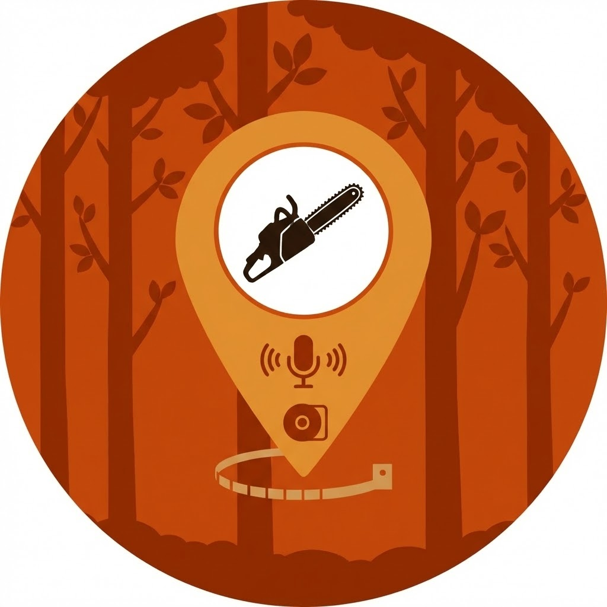
スマホのGPSログから解析サイトで作業時間、作業箇所を可視化します。
使用する機能：GPS
解析！：GPSログをAI日報 解析ダッシュボードでドラッグドロップしてください。※もし’寝てる’画面が表示されたら青いボタンを押してください。
注意！：GPSログを取るため自動ロックを外し常にアプリを画面表示してください。使用前にバッテリーを十分に充電してください。
アプリを開く 使い方（note）スマホで現場写真を撮り小黒板、緯度経度、撮影方向を合成します。
使用する機能：カメラ、GPS、電子コンパス
参考！：撮影場所や撮影方向を撮影場所サイトで地図上で確認できます。
アプリを開く 使い方（note）各アプリ（立木調査、座標変換、丸太検知、作業日報）から出力したCSVファイルをボタン一つでシートへ読み込みます。帳票の元データとしてお使いください！
※ダウンロード後、右クリックで「プロパティ」→「全般」→「許可する」にチェック。
連携ツールをダウンロード (xlsm)電子黒板アプリで撮影した写真や各アプリでスクショした画像をボタン一つでシートへ自動挿入します。写真台帳としてお使いください！
※ダウンロード後、右クリックで「プロパティ」→「全般」→「許可する」にチェック。
連携ツールをダウンロード (xlsm)主に事務所での仕事を効率化します。
人工林の林内を撮影した写真から用材割合を推定します。
使い方：お使いのブラウザで開き、そのまま使用してください。
注意！：実験的なツールですので最終的には専門家の方に判断していただいてください。
お願い：AIの精度を向上するため、ぜひ林内写真の提供をお願いします！
※位置情報は事前に消去します。
参考！：丸太価格、AIによる今後の予測をこちらでご閲覧いただけます。
アプリを開く 使い方（note）樹幹上部まで写るように縦長（16:9等）で撮影してください。また曲りやクマ剝ぎ等が写るよう山側から撮影してください。（以下、撮影例）
あらかじめ撮影した複数枚の林内写真を一枚ずつアプリでAI診断し”評価値の平均”を用材割合の目安の一つにしてください。
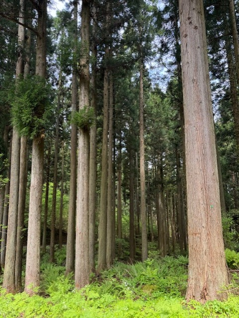
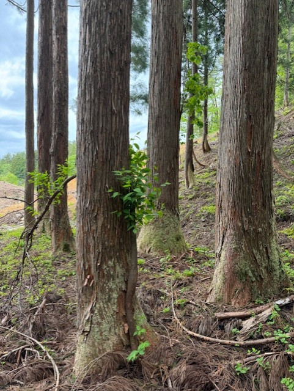
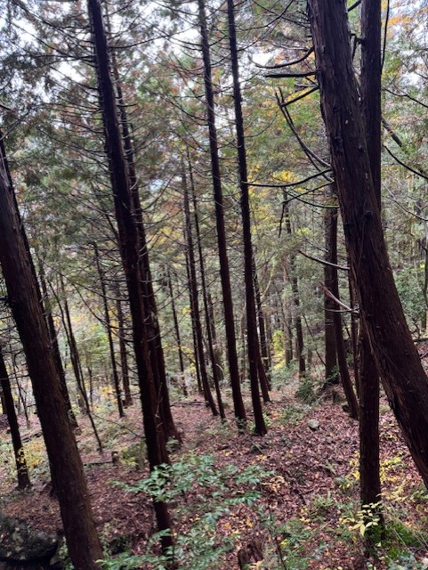
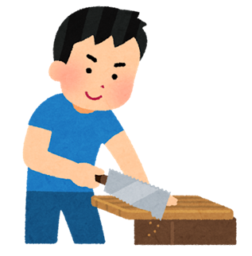
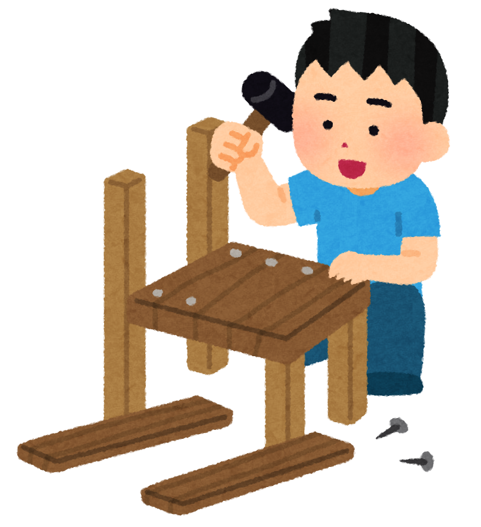
AIの親方が木工作品のラフ案をつくります。
使い方：お使いのブラウザで開き、そのまま使用してください。
注意！：AIの使用にあたり’Google Gemini APIキー’（無料版）が必要ですので事前に取得してください。
→こちらのサイト等を参考にしてください。
各種質問にAIが回答します。
'伐採および伐採後の造林の届出等'に関する質問にAIがお答えします。
使い方：お使いのブラウザで開き、質問事項を入力してください。
注意！：AIの使用にあたり’Google Gemini APIキー’（無料版）が必要ですので事前に取得してください。
→こちらのサイト等を参考にしてください。
アプリの具体的な活用シーンをアドバイスします。
このスギ林で間伐を計画したいけど’林の込み具合’をどうやって測るのかな？...。そんな時、「AI林冠アプリ」なら、スマホで枝葉（林冠）を見上げて写真を撮るだけで込み具合（林冠被覆率）が一瞬で分かります。
このスギ林で主伐をしたいけど’高く売れる丸太’の割合がどれくらいあるのかな？...。そんな時、「立木評価アプリ」なら、スマホで林内写真を撮るだけで一瞬で用材割合が分かります。
この伐採跡地で植林をしたいけど太陽がいっぱい当たってちゃんと木が育つのかな？...。そんな時、「AI魚眼アプリ」なら、スマホで上空に向けて写真を撮るだけで太陽の当たり具合（相対照度）が一瞬で分かります。※簡易的な魚眼レンズが必要です。
山土場の椪積の材積を把握したいけど丸太本数が多くて検知が大変...。そんな時、「AI検知アプリ」なら、スマホで椪積写真を撮るだけで丸太材積が一瞬で分かります。
プロットの本数調査したいけど’釣竿’を振り回すと下層植生や枝葉に引っかかって大変...。そんな時、「AR釣竿アプリ」なら、スマホで下層植生や枝葉に引っかかることなく立木本数を管理できます。
現場で’日報付け’るのは大変、事務所で’どこまで作業’したか把握が大変...。そんな時、「AI日報アプリ」なら、スマホでGPSログを取るだけで作業時間や作業場所を一瞬で可視化できます。
一林業普及指導員が現場ニーズを踏まえ生成AIを使用して個人開発したツール集であり林業現場のデジタル化（林業DX）に貢献することを目的に”入門編”として公開しています。
まずは無料で林業DXを体験していただき、次は各社が提供している高機能で保守管理されたアプリ・システムへステップアップしてください。
PWA（Progressive Web Apps）という技術を使用しているため一度読み込めば圏外でも動作可能です。ただし初回起動や更新時は通信が必要です。また使用直前に圏内で一度起動した状態のままで使用してください。オフライン動作が安定します。
入力したデータはブラウザ内のローカルストレージにのみ保存され外部サーバーに送信されることはありません。なお立木評価アプリで林内写真の提供に同意いただいた場合を除きます。
本サイトで公開しているアプリケーション（以下、本アプリ）のご利用にあたり、以下の事項をご確認・ご同意ください。